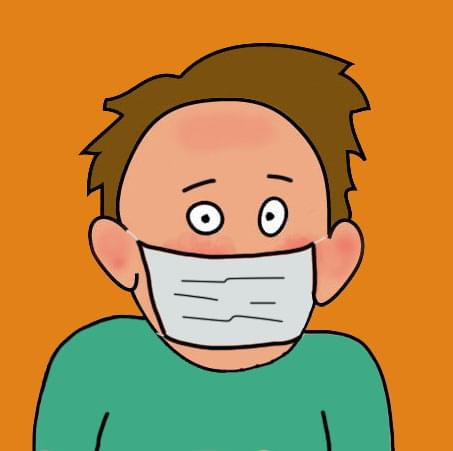

Maschera medica contro arrossamento del viso
Una buona opzione per nascondere il rossore del viso. Durante Covid sembrerai naturale. E, soprattutto, ti sentirai più a tuo agio psicologicamente.
La mia esperienza personale con la sindrome del viso arrossato
Ciao, mi chiamo Arthur. Ho creato questo sito per aiutare le persone che soffrono di eritrofobia e iperidrosi. Ho sperimentato personalmente la sindrome del rossore, molti modi per affrontarla, simpaticectomia endoscopica e tutte le conseguenze postoperatorie.
Proverò brevemente, ho iniziato a soffrire di eritrofobia durante i miei anni scolastici. La sensazione di arrossire mi ha sopraffatto in qualsiasi situazione imbarazzante. In questo contesto, ho iniziato a complicarmi e diventare una persona sempre più insicura e depressa. Questo è andato avanti per 5 anni. Durante questo periodo ho imparato a mascherare parzialmente e prevenire il rossore del viso. Ho cercato di utilizzare i miei metodi in modo complesso, dall'assunzione di sedativi alle tecniche psicologiche. Tutto questo è andato avanti fino al momento in cui ho saputo che il problema del rossore del viso può essere risolto chirurgicamente. Dopo aver visitato molti siti e forum, sono giunto alla conclusione che avrei eseguito questa operazione chirurgica, poiché la sindrome del rossore non mi ha permesso di aprirmi come persona e ha peggiorato notevolmente la qualità della mia vita. Sfortunatamente, su Internet ci sono dati contrastanti sulla simpaticectomia, ma in generale si dice che l'operazione sia facilmente tollerata, ci sono un minimo di effetti collaterali e quasi il 95% dell'efficacia. Pertanto, nel 2011 Di nascosto dai miei parenti e da tutti i miei amici, sono andato in ospedale, dove mi sono sottoposto a simpaticectomia toracica endoscopica.
Dopo l'operazione, ho smesso completamente di arrossire. Ma c'erano effetti collaterali. I più gravi sono l'iperidrosi compensatoria, i problemi di potenza e libido, la frequenza cardiaca lenta (bradicardia), ecc. Nel corso degli anni, ho cercato modi per affrontare gli effetti collaterali, sono andato a consultazioni con molti specialisti, ho cercato persone che avevano subito simpaticectomia, ho parlato con loro e ho provato molte cose su me stesso.
Riassumendo: sono riuscito a risolvere il problema con la potenza, la libido parzialmente ripristinata, la frequenza cardiaca è aumentata e rientra nell'intervallo normale dopo simpaticectomia endoscopica, l'iperidrosi compensatoria è diminuita di circa il 30%. Per eliminare completamente gli effetti collaterali, è necessario eseguire un'operazione inversa per ripristinare il tronco simpatico. Dirò subito che ci sono modi per invertire il nervo simpatico, ma sono piuttosto costosi.
Mi chiedi: sapendo tutto in anticipo, rifarei una simpaticectomia? Risponderò di sì, ma in modo diverso... Il fatto è che in medicina questa operazione è una buona fonte di guadagno. I medici eseguono la simpaticectomia come standard, non si rendono conto di quanto sia grave l'operazione, quali conseguenze, effetti collaterali possono verificarsi dopo l'intervento chirurgico! Ma dal momento che sei qui, significa che supereremo insieme ogni difficoltà!
La sensazione di arrossamento del viso, come l'iperidrosi, non può essere controllata dalla forza di volontà, ma controlla alcuni dei metodi che ho usato contro l'eritrofobia.
Una buona opzione per nascondere il rossore del viso. Durante Covid sembrerai naturale. E, soprattutto, ti sentirai più a tuo agio psicologicamente.
La barba dà fiducia agli uomini e maschera le tue guance arrossate. Se non cresce per te, usa il minoxidil. Maggiori dettagli sul mio patreon. Bene, care ragazze, portate l'intero set di cosmetici nel vostro arsenale.
Visita i solarium, prendi il sole sulla spiaggia. Il rossore facciale è meno visibile sulla pelle abbronzata. L'unico aspetto negativo è che la luce solare invecchia la tua pelle, quindi usa creme, non abusare del sole e visita un dermatologo se hai la pelle delicata e le voglie.
Sedativi e antidepressivi sono utili per far fronte alla sindrome del rossore. Usali in anticipo se hai in programma un evento emozionante. Se necessario, visita il tuo medico per farti compilare la prescrizione.
Usa tutti i tuoi metodi per sconfiggere la sensazione di rossore in faccia. Insieme, la loro efficacia cresce in modo esponenziale.
Le tecniche psicologiche sono abbastanza efficaci contro l'eritrofobia. Inoltre, aiutano in situazioni in cui il tuo viso è già arrossato, facilitando la tua condizione. In dettaglio, amico, guarda il mio patreon.
La simpaticectomia endoscopica toracica viene eseguita per le persone che soffrono di iperidrosi dei palmi e del viso e per le persone con sindrome da rossore... Prima di decidere su tale operazione chirurgica, è necessario sottoporsi a un trattamento conservativo. Prova vari metodi per affrontare la malattia e solo in situazioni senza speranza ricorri al trattamento chirurgico. Personalmente, ho fatto una simpaticectomia e mi sono liberato completamente della sindrome del rossore. Ma allo stesso tempo ha avuto molti effetti collaterali:
Il verificarsi di effetti collaterali dipende da molti fattori. Le peculiarità del tuo corpo e del sistema nervoso nel suo insieme, la presenza di malattie concomitanti, ecc. Ma l'impatto più importante sarà la corretta esecuzione della simpatectomia toracica. Alle consultazioni sugli effetti collaterali, ho appreso dall'assistente professore di chirurgia che nel mio caso l'operazione dovrebbe essere eseguita individualmente, e non in modo standard, secondo il mio sistema nervoso. Il resto dei medici ha espresso le condoglianze e ha affermato che ero nel 5% di coloro che hanno gravi conseguenze postoperatorie. Ma ho ancora contatti con i pazienti della mia stanza d'ospedale, le nostre reazioni avverse sono simili.
La cosa più offensiva in questa situazione è che eseguire individualmente la simpaticectomia non è più difficile del metodo standard. Devi esserne consapevole e consultare un chirurgo considerando questo aspetto. Sul mio "patreon.com", spiegherò in dettaglio, in termini semplici, la simpatectomia individuale. Inoltre, qui sono raccolte tutte le informazioni che ho verificato personalmente sulla lotta contro gli effetti collaterali, l'eritrofobia, l'iperidrosi e la chirurgia di riparazione del nervo simpatico inverso.
Nel nostro caso, ci capiamo perfettamente. Va detto subito che puoi eliminare completamente gli effetti collaterali solo eseguendo un'operazione inversa per ripristinare il nervo simpatico. Sono passati più di 10 anni da quando ho subito una simpatectomia toracica. Nel tempo ho affrontato vari problemi e migliorato la qualità della vita. Ma se la mia situazione finanziaria lo consente, ricostruirò il tronco simpatico, altrimenti continuerò a vivere e svilupparmi. Coraggio, amico, sul mio Patreon condividerò tutto quello che so.
❝O fai una simpaticectomia correttamente o non farlo affatto..❞
Артур М.
Patreon è un sito Web progettato per ospitare contenuti aggiuntivi di blogger, musicisti, artisti, autori di corsi e altro ancora. su un abbonamento a pagamento. Gli abbonati sono chiamati "patrons" (patrocinatori inglesi). ottengono il contenuto (spesso edizioni esclusive), possono scaricarlo e così via. Patreon è come un social network chiuso, con un comodo posizionamento delle pubblicazioni, piena funzionalità per gli utenti. Vedere Wikipedia per ulteriori informazioni.
Nel mio Patreon, ho raccolto informazioni: